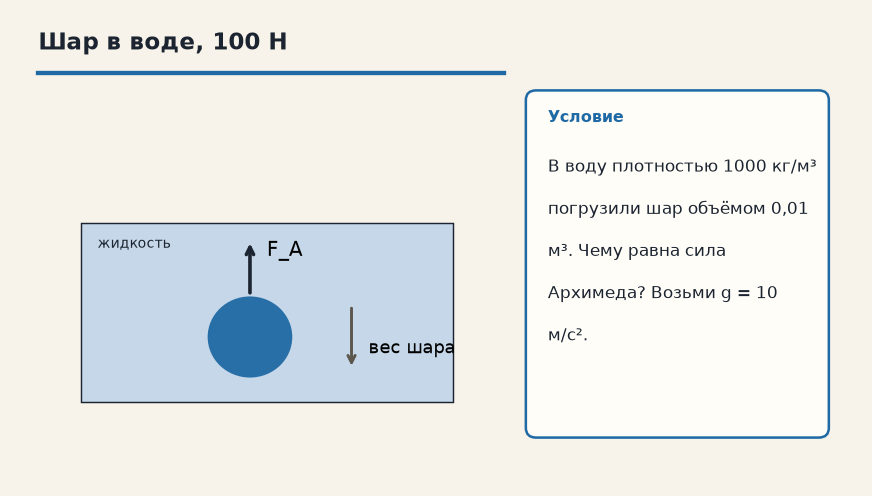
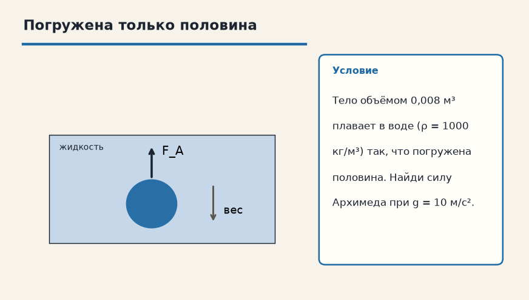

Механика · Статика и гидростатика · 5.2
Закон Архимеда
Лист для письменной работы: данные, перевод в СИ, искомая величина, ход решения, ответ. Ответов на листе нет.
1. Шар в воде, 100 Н
В воду плотностью 1000 кг/м³ погрузили шар объёмом 0,01 м³. Чему равна сила Архимеда? Возьми g = 10 м/с².

2. Погружена только половина
Тело объёмом 0,008 м³ плавает в воде (ρ = 1000 кг/м³) так, что погружена половина. Найди силу Архимеда при g = 10 м/с².

3. Объём 2 л
В воду (ρ = 1000 кг/м³) полностью погрузили тело объёмом 2 л. g = 10 м/с². Найдите силу Архимеда.
4. Половина объёма
Тело объёмом 0,006 м³ погружено в воду наполовину. ρ = 1000 кг/м³, g = 10 м/с². Найдите F_A.
5. Керосин
Тело объёмом 0,004 м³ полностью погрузили в керосин плотностью 800 кг/м³. g = 10 м/с². Найдите F_A.
6. Плотность тела не нужна
Ученик подставил в силу Архимеда массу тела 2 кг. Что следует подставлять вместо неё, если известны ρ жидкости, g и Vпогр?
7. Направление
Куда направлена сила Архимеда?